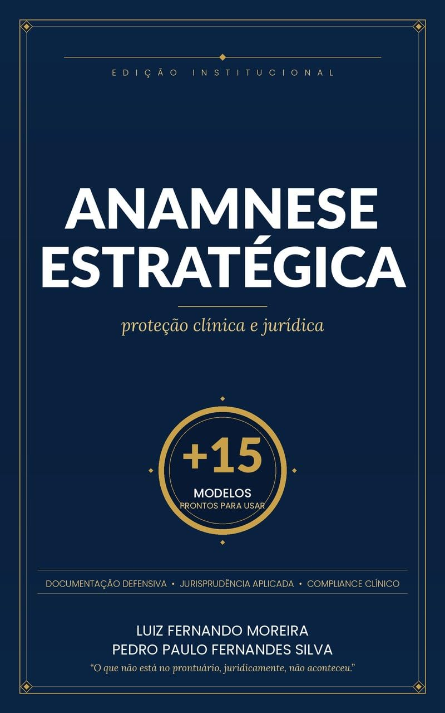
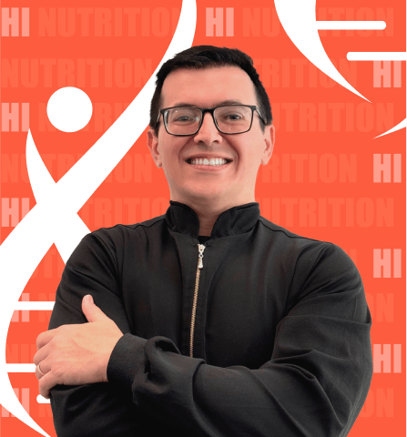
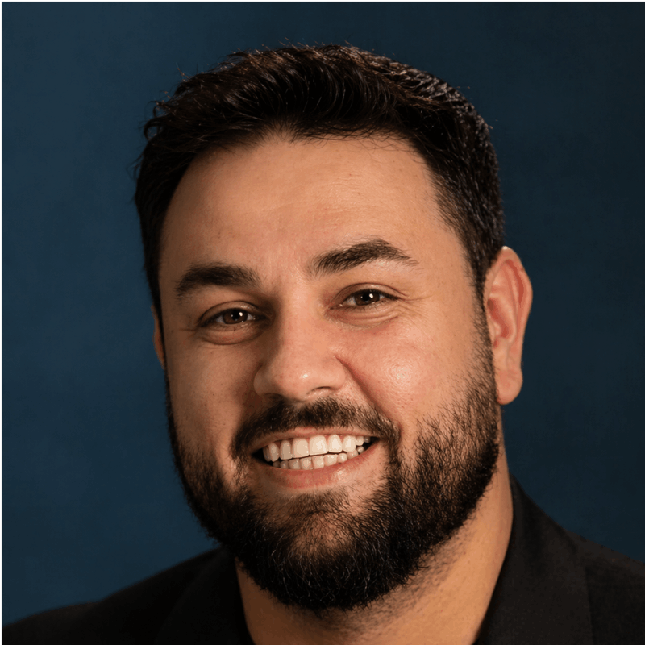

As ações judiciais contra profissionais de saúde cresceram quase 50% na última década. Na maioria dos casos, o profissional não errou na técnica — simplesmente não conseguiu provar que agiu corretamente.
Acesso imediato ao livro

Você estudou anos para dominar a técnica. Fez residência, especializações, atualiza seu conhecimento constantemente.
Mas existe uma verdade desconfortável que nenhuma faculdade ensina:
O juiz não esteve na sala de consulta com você.
Ele vai julgar o que está escrito. E se não estiver escrito, para o Direito, simplesmente não aconteceu.
"Na maioria dos casos analisados, o profissional não errou na técnica — simplesmente não conseguiu provar que agiu corretamente."
Você já pensou no que aconteceria se um paciente te processasse amanhã?
Seu prontuário provaria que você explicou os riscos? Que o paciente recusou o procedimento e assinou? Que o consentimento foi informado de verdade?
A maioria dos profissionais que responde "sim" com segurança — quando o advogado abre o arquivo — descobre que não.
por Prof. Luiz Fernando Moreira e Prof. Pedro Fernandes
Não é mais um livro de anamnese clínica.
Não é um manual jurídico cheio de juridiquês.
É o método que une, pela primeira vez de forma integrada, o rigor técnico da boa anamnese com a inteligência jurídica da documentação defensiva — baseado em jurisprudência consolidada do STJ, Resoluções do CFM e diretrizes do CDC.
Um método replicável. Implementável em 48 horas. Que protege sua carreira pelos próximos 20 anos.
Acesso imediato ao livro digital
Você vai entender exatamente quando é obrigação de meio ou resultado — e como isso muda sua estratégia de documentação.
Anamneses, TCLEs blindados, registros de recusa, termos de alta — prontos para adaptar e usar amanhã.
Veja linha por linha o que o juiz valorizou para condenar ou absolver — e aprenda com os dois lados.
Como usar ferramentas modernas sem criar brechas processuais que você nem imagina existir.
O que registrar, como armazenar, quais consentimentos são obrigatórios — atualizado para a realidade atual.
Implementáveis em plantão, consultório ou clínica em menos de 48 horas.
O ponto cego que derruba profissionais tecnicamente corretos — e como blindar esse gap.
Da consulta inicial à guarda documental — com checklist de auditoria interna pronto.
Este livro não é para quem acha que "isso nunca vai acontecer comigo". Infelizmente, as estatísticas discordam.
Garantir meu exemplar agora


Mais de duas décadas de atuação na interseção entre prática clínica e direito médico — com artigos, formação multidisciplinar e experiência direta nos dois lados da questão: a sala de consulta e o processo judicial.
Este livro não é teoria acadêmica. É o destilado do que realmente funciona quando o caso chega no tribunal.
"O que não está no prontuário, juridicamente, não aconteceu." — Luiz Fernando Moreira & Pedro Fernandes
Sem juridiquês para o clínico. Sem superficialidade médica para o jurista. Cada capítulo fala com você do jeito que você precisa ouvir.
Não é teoria. São decisões reais do STJ e Tribunais de Justiça dissecadas para você entender o que salvou — e o que afundou — cada profissional.
+15 documentos que você adapta para sua especialidade e começa a usar ainda esta semana. Sem precisar de advogado para criar do zero.
Callouts de alerta, boxes de modelos, comparativos condenação × absolvição, checklists destacáveis. Não é PDF genérico — é ferramenta de trabalho.
Edição Institucional — eBook Kindle
Acesso imediato após a compra
🔒 Compra segura · Acesso imediato · Compatível com qualquer dispositivo
Não. O livro foi escrito exatamente para quem vem da área clínica — a linguagem jurídica é apresentada de forma acessível, com exemplos práticos e casos comentados.
Os +15 modelos cobrem as principais especialidades médicas e áreas de saúde — anamneses, TCLEs, registros de recusa e termos de alta. Todos são adaptáveis à sua realidade.
Sim. A edição cobre telemedicina em 2026, uso de IA clínica, jurisprudência recente do STJ e as Resoluções vigentes do CFM.
É um eBook Kindle. Após a compra na Amazon, o acesso é imediato — você lê no app Kindle gratuito no celular, tablet ou computador.
Sim. O método é aplicável a dentistas, psicólogos, fisioterapeutas, nutricionistas, fonoaudiólogos, enfermeiros, terapeutas e gestores de clínicas.
Nenhum processo avisa que vai chegar.
Você pode continuar atendendo da mesma forma — e torcer para que nunca aconteça com você.
Ou pode construir, a partir de agora, uma rotina de documentação que protege cada consulta, cada procedimento, cada decisão clínica que você toma.
A diferença entre esses dois profissionais não está na competência técnica.Acesso imediato · Compra segura